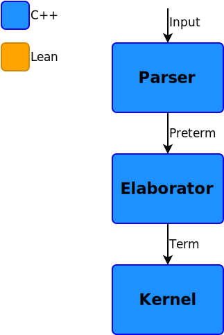
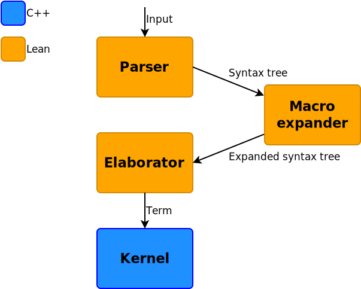

# Lean4: Reimplementing Lean in Lean ## [Sebastian Ullrich (Karlsruhe Institute of Technology)](https://pp.ipd.kit.edu/person.php?id=144) ### Microsoft Research Redmond, 2018/10/12 <aside class="notes"> This talk is about our *(add.: Leonardo de Moura and I's)* work on the next version of Lean, Lean 4, in general, and more specifically on the main result of these last three months, which is a new parser for the Lean language written in Lean itself. </aside>
# A brief history of Lean - Lean 0.1 (2014) - Lean 2 (2015) - first official release - fixed tactic language - Lean 3 (2017) - make Lean a **meta-programming** language: build tactics in Lean - backed by a bytecode interpreter - Lean 4 (201X) - make Lean a **general-purpose** language: native back end, FFI, ... - reimplement Lean in Lean Note: To give you some context on why we're reimplementing things in Lean 4, let me start with a brief history of the Lean project. The very first version of Lean you can find online is named 0.1. I've... never used it and can't tell you much about it, so let's just start at *Lean 2*, which was the first *official* release. Lean 2 already was a nice interactive theorem prover with dependent types where you could input your proofs as proof terms, much like in, say, Agda. But it also had a fixed set of tactics that provided some automation. Then Lean 3 came along and greatly generalized that part by allowing users to write their *own* tactics, *in* Lean itself, so that they didn't have to learn a separate language. And so Lean became a meta-programming language. But of course users were not satisfied for long: They didn't just want to use the simplifier primitive written in C++ in their own tactics, they wanted to write their *own* simplifier, or at least customize the built-in one. The same thing was true for the parser, which you could tell from Lean to parse, say, a term. But users didn't just want to parse terms, they wanted to parse a `structure` command, no, they wanted to parse their *own* `structure` command that *reused* parts of the grammar of the built-in command. So the only way forward we could see that would not end in us being drowned by customization requests was to move all these tools closer to the user: by reimplementing them in Lean itself, so that accessing, reusing, and extending any part of them could become much more natural and simple. Thus Lean 4 really needs to become a *general-purpose* language in which it's possible to write big, real-world programs and compile them to sufficiently fast code.
Lean 3 frontend

Lean 4 frontend

# Writing a parser in 2018 Modern ASTs should be usable not just by the compiler but also external tools like - code editors - documentation generators - refactoring tools - ... For that, they should capture - precise source locations - whitespace and comments - erroneous input As seen in - Roslyn (C# compiler) - TypeScript Note: So, it's 2018 and you want to write a new parser. What do you do? It seems that nowadays a parser's output should not just be internal to the compiler, but is expected to be reusable for things like editor integration, generation of documentation, and even syntax transformations like refactorings. To do that, the syntax tree needs to capture some additional metadata like the precise source location of each token and the input between tokens like whitespace and comments. The parser also shouldn't just give up on syntax errors but still return at least a partial syntax tree. Both the new C# compiler and the TypeScript compiler prominently feature such parsers, so really we're just following a general trend at Microsoft here.
# Writing a parser in 2018 <div data-external="include/syntax.md"></div> Note: Okay, what does this look like in Lean 4? The metadata is stored in a relatively basic structure containing the position of a token together with the leading and trailing whitespace as strings. A leaf in the syntax tree then is a simple string together with this metadata, at least if it came from the original input. A syntax node contains a list of children as well as a *kind*, which is basically a string describing its function. Finally, a syntax tree is an atom, node, or the special atom `missing` that we use in partial syntax trees on error recovery. So the syntax tree is basically *stringly*-typed, which makes it possible for users to contribute their own node kinds such as new macros. We'll see later how we can regain some sanity in this approach. What do these syntax trees look like in practice? Actually, the code blocks in this presentation are not simply strings highlighted by some regexes, but syntax trees produced by the new parser and pretty-printed to HTML. I *(add.: and now you)* can hover over any part and get a more primitive display. For example, the last line is an introduction rule containing the bar token, the identifier "missing", and some optional parts like a signature that we left out here.
# Writing an **ITP** parser in 2018 **Lean 3**: basic lexer, LL(1) recursive descent parser **Isabelle**: basic lexer, Earley parser for arbitrary context-free grammars, delimited terms <div class="fragment"> **Lean 4**: <ul> <li>**no** built-in lexer <ul> <li>make it possible to embed arbitrary DSLs in Lean</li> </ul> </li> <li>arbitrary **char-based** parsers built on top of monadic parser combinators</li> <li>local arbitrary backtracking via /longest match/ combinator <ul> <li>possibly combine with packrat parser-like cache</li> </ul> </li> </ul> </div> Note: Now, we don't want to write just any parser, but a parser for an interactive theorem prover, which are expected to accept much more complex and mathy input than regular parsers. Actually, the Lean 2/3 parser is just a basic, hand-written recursive-descent parser with one-token lookahead, much to the annoyance of mathematicians that want to define heavily-overlapping notations. If we look at the other extreme, the Isabelle prover uses the Earley parser algorithm to accept any context-free term grammar, returning all possible syntax trees on ambiguous input. It helps that their term language is used in clearly delimited contexts nested in the outer proof language, so the scope of potential ambiguity is relatively small. Both parsers are built on top of a basic lexer that can dynamically be extended with new tokens. *click* The new Lean 4 parser will be even more general than either of these in that there will be no built-in, fixed lexer so that users can embed languages in Lean that may have a very different lexical structure. Instead we using monadic parser combinators working directly on characters, then build **transparent** abstractions on top of these. We also provide a convenient combinator for at least *local* backtracking that takes a list of parsers and returns the syntax tree of the longest match, or multiple trees if multiple parsers produced the same longest match. This should be sufficient for most overlapping mathematical notations. It can also take exponential time in theory, but if that becomes an issue in practice, we want to combine it with caching invocations of the same parser at the same position, much like in the packrat parsing algorithm.
# Syntax tree-constructing parser combinators <div data-external="include/anon.md"></div> <div data-external="include/view.md" class="fragment"></div> Note: So here's what writing a parser in Lean 4 looks like: this is a term parser for something called "anonymous constructor", which between the square brackets is described as consisting of this weird opening bracket (parsed with maximum precedence), then multiple terms separated by commas, and concluded by the matching closing bracket. The `node!` macro executes these three parsers and puts their results in a new syntax node with three children and the node kind `anonymous_constructor`. What I mostly want to show with this code snippet is that specifying a Lean 4 parser is about as declarative as, say, using Backus-Naur form, but with the added flexibility that we can always define new convenient combinators like `sep_by`. Why do we need this `node!` macro (which for now is hard-coded into the old C++ parser)? *click* It automatically synthesizes a *view* structure that has a field for each parser in the macro invocation, as well as an instance of the `has_view` type class, which can convert between syntax trees and the specified view. So even though our syntax tree is stringly-typed, we can get back a local, strongly-typed view of it. This has already proved to be very convenient in the few parts of the expander and elaborator we've implemented so far.
# Lean 4 parser status - ~2900 LoC, 151 node kinds - able to parse all ~2000 LoC of `core.lean` - produced syntax tree round-trips <div data-external="include/perf.md"></div> Performance mostly an issue with Lean 3 code generation for monadic programs: - interpreted - no specialization to avoid closures <div data-external="include/eta.md"></div> Note: Now, at the end of the internship, the new parser can successfully parse the entire initial `core.lean` file. We also check that concatenating all tokens and whitespace in the syntax tree results in the original file, so the metadata should be correct, too. Testing the parser on other parts of the standard lib is difficult right now because we don't have the new module system ready yet, which we need for importing notations. Anyway, `core.lean` should already provide a pretty good coverage of the Lean language. Regarding performance parsing `core.lean`, the parser... terminates. We definitely have to do some optimizations there, which we've started only recently *(add.: and in fact, two weeks later, we're already down to ~5 seconds and 2M closures)*. This not only concerns the parser code, but also the backend, which right now is mostly still the Lean 3 bytecode generator and VM that only applies simple optimizations. In particular, we've noticed an issue that helps explain this absurd number of closures. When the compiler sees a polymorphic function like `state_t.pure` here, it assumes the function's arity is 2, because it sees abstractions `a` and `s`, but cannot say if the value of `pure (a, s)`, which has type `m (α × σ)`, is another function. If we then use the function in a context where `m` is indeed another function -- such as `io`, which is basically another `state` --, `state_t.pure` will allocate and return a closure for the inner `pure`, which is then immediately invoked and destroyed. What was not at all obvious to us is that this will still happen if we maximally eta-expand `test` like in `test'`, since this does not change the code in `state_t.pure` generating the closure! What we need the compiler to do here in addition to eta-expansion is to **specialize** `state_t.pure` for this specific `m` so that it can find the ideal arity 3 and avoid the creation of any closures. *(add.: which it indeed does now!)*
Components in progress
# Macro expander Steal the best ideas from Scheme/Racket: - top-down expansion, with `local-expand` override - ensure hygiene by marking identifiers with sets of scopes Work on *formalizing hygiene* and provide verification condition for user-created macros <div>`$\Sigma_{surf} \vdash s =_{\alpha} t \;\Rightarrow\; \Sigma_{core} \vdash f(s) =_{\alpha} f(t)$`</div> Note: As I said before, we are implementing a macro expander for Lean 4 that is based on Lisp macro systems, that is, we do top-down, hygienic expansion by adapting Racket's recently introduced "set of scopes" algorithm. Hygiene here means avoiding accidental capture by macro-introduced identifiers, which is a real issue users encountered with unhygienic parts of Lean 3. We also want to work on the theoretic part of hygiene so that we can formally prove macros hygienic, but I'm afraid I don't have enough time for elaborating on that part today.
# Elaborator The Lean 3 elaborator has a strict left-to-right elaboration order: <div data-external="include/elab.md"></div> When we rewrite it in Lean, we want to switch to a *dependency-based* ordering - based on a **coroutine monad** - When some information is needed, but not yet known, **yield** - When a metavariable is assigned, **resume** dependent elaborators Note: Since we need to rewrite the elaborator anyway, we would like to give it a new design that lifts a fundamental restriction of the current implementation: there, arguments of a function are always elaborated left to right, which is problematic if elaboration of one argument depends on e.g. the type of a later argument. Instead, we want to relax the ordering by making the elaboration of every argument its own *coroutine*. That means that when elaboration of one argument is stuck, it can **yield** to the outer loop, which will continue with elaborating the other arguments. Then, when the missing information is available, the outer loop can **resume** the paused coroutine for the argument and so on, until the coroutine terminates with a final result.
# Coroutines for interactive code processing The parser and elaborator need to be suspended when reaching the end of the screen **Lean 3**: Store/restore internal state to/from snapshot structure (fragile) **Lean 4**: Use coroutine on top level and *yield* after each command ${\Rightarrow}$ State is captured implicitly Resuming a coroutine does not mutate it ${\Rightarrow}$ We can store all yield points and **resume** the one just above an edit Note: We can actually reuse the same coroutine monad in another context: both the parser and elaborator have to work *asynchronously* in that they should suspend themselves when in interactive use the end of the user's screen is reached. In Lean 3, this is done by copying their entire internal state to and from a structure, which is neither pretty nor robust. With a coroutine monad inside of a state monad, the state (including local variables) is implicitly captured on each yield. And with a **pure** coroutine monad, we can even save all yield points in a list and on a text edit backtrack to the one just before it, making the coroutine time-travel back to the last known valid execution state.
# Making it fast: code generation - support for **unboxed** primitive types - boxed objects **reference counted** - use destructive updates on RC=1 - use non-atomic RC operations by default, mark object graphs as multi-threaded in threading primitives - functional IR for GHC-like optimizations - using **verified** rewrite rules - imperative IR for RC optimizations - interpreter/JIT backend and native backend - foreign function interface Note: So how are we planning to make all of this fast enough? Starting with the object model, we will support some built-in unboxed types to avoid allocations and object tagging in the most primitive computations. Boxed objects are still ref-counted, not just because implementing a good garbage collector, especially one that can interface with the C++ parts, is *really hard*, but we can actually do fun optimizations like switching to destructive updates when the reference count is 1. To alleviate some of the performance issues of ref-counting, we use non-atomic ref-counting operations by default, and only when an object is actually shared (and not just moved) between two threads, will the called threading primitive mark it as multi-threaded. For the compiler pipeline, we start with optimizations heavily inspired by GHC on a functional intermediate representation, like the specialization I've mentioned before. Then we want to switch to an imperative IR where we introduce and optimize ref-counting operations. Finally, we want to have both a new interpreter (or perhaps the LLVM JIT?) for quick testing and execution of small tactics as well as a native backend for bigger programs like the parser. We already have a compiler from the imperative IR to C++ code, but we're also looking into interfacing with LLVM, at which point it's probably finally time to give Lean a proper foreign function interface.
# Making it fast: imports **Issue**: Deserializing imports on startup takes a long time <p class="fragment"> **Solution**: Don't deserialize imports </p> <div class="fragment"> <ul> <li>directly store run-time representation using relative pointers</li> <li>use `mmap` for on-demand reading and sharing between multiple Lean processes</li> </ul> </div> Note: One more fun optimization: startup in Lean 3 can take quite some time because first all imports have to be read from disk and deserialized -- which is a lot of data if you also store proof terms. I've heard similar provers have the same issue on large projects. We want to make this part faster by... *click* not deserializing imports. *click* What I mean by that is that we're planning to switch to directly storing the in-memory representation of objects in our object file format, computing relative pointers on serialization. On startup, we do not translate them back to absolute pointers but do dynamic checks at runtime for the pointer kind, which in test turned out to be negligible overhead. If we thus know which objects are from imports, we can also skip RC operations on them, making that memory region truly immutable. Which means that we can even share imports between multiple Lean processes via `mmap` or equivalent syscalls, making imports (almost) zero-cost in both memory usage and startup time.
# Making it fast: monad transformers Standard monad transformer implementations: Allocate on basically every operation <div data-external="include/monad1.md"></div> Alternative implementations optimized for destructive updates <div data-external="include/monad2.md"></div> Note: And finally, Leo came up with a nice optimization that combines library and compiler optimizations. You may remember that aside from a horrendous amount of closures, the parser also allocated quite a number of objects. Most of these are probably from monadic return values, where almost every action allocates a pair for the state and a sum type for the error effect. You may think that support for unboxed product and sum types should solve this issue, but it doesn't really work here since the return type is used in a polymorphic context `m`. Instead, we can change the monad definitions so that they pass in the previous return value. In the very most cases, this parameter should have ref count 1, which means we can reuse it for the new return value, completely avoiding new allocations.
# Conclusion Make Lean **sufficiently fast** for real-world programs, tactics, and decision procedures Give users **full access** to internals by reimplementing them in Lean Note: In conclusion, our goals for Lean 4 are simply, and just slightly ambitiously, to make Lean a real-world programming language you can use to implement complex programs like a parser, and use this new power to give users unprecedented access and extensibility opportunities of parts of Lean previously hidden in C++.